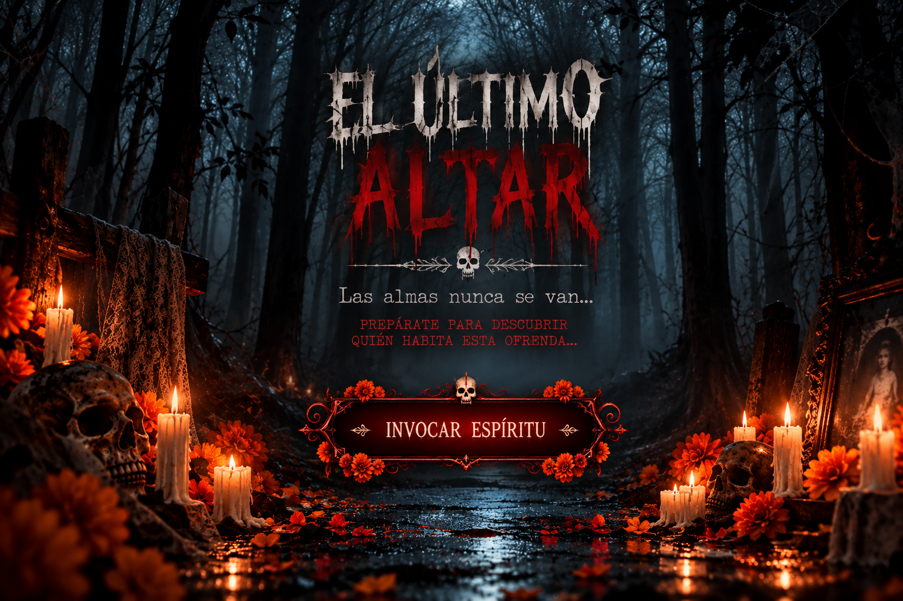
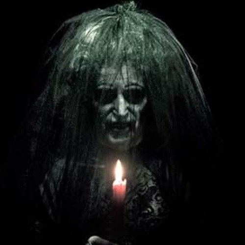

EL ÚLTIMOALTAR
☠
Las almas nunca se van...
PREPÁRATE PARA DESCUBRIR
QUIÉN HABITA ESTA OFRENDA...
🕯️ 🌼 🕯️
No debiste despertarla...
3
Escucha con atención...

¡TE ENCONTRÉ!
🌼 💀 🌼
¡JAJAJA, TE ASUSTASTE!
Los muertos también saben bromear.
Feliz Día de Muertos 🧡